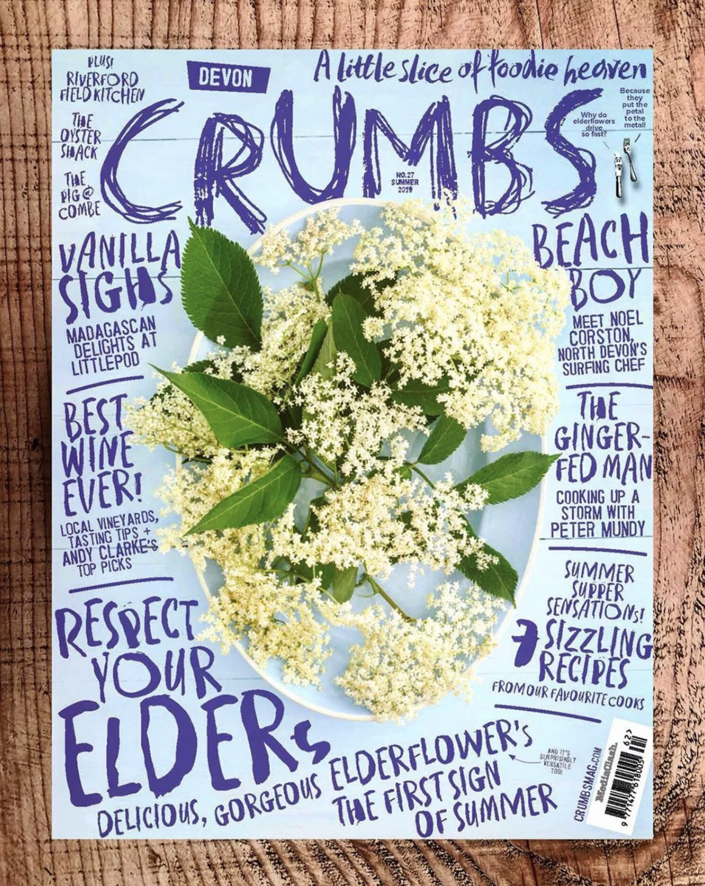

设计周刊 Design Weekly #49
📕 设计资源
道德设计指南
技术是带有政治性的，数据的收集和处理方式也带有很多偏见，比如说人工智能、伦理、种族主义等，EthicalDesign 旨在分享资源，了解如何创建不造成伤害的产品。
Huge XD School
设计公司 Huge 推出的为其 10 周的体验设计训练营课程。
Google Fonts ❤️ Material Icons
Material Icons 现在可以在 Google Fonts上使用了。
📗 设计文章
Psychological principles for every product designer
https://uxdesign.cc/psychological-principles-every-product-designer-should-know-ddf051e8f6d8
每位产品设计师需要懂得心理学原则：提高用户体验很大程度上是了解用户想要什么/需要什么，以及用户的认知程度。因此，心理学是为用户设计的关键因素。
Alan Cooper：当企业质疑设计的价值
https://medium.com/s/user-friendly/whats-the-roi-of-ux-c47defb033d2
UI 的投资回报率是多少？是有史以来最愚蠢的问题吗？ 设计师们经常被问及他们作品的价值，但从来没有一个很好的答案。那些雇用设计师并问他们价值的人显然不知道设计师做什么，也并不真正关心设计可能贡献的任何价值。
当你的老板问你的工作价值是什么？你有两条有效的行动方案： 1.接受毫无价值的定位；2.去重视你工作的地方，一个不问你工作价值而是重视你工作的地方！
实用指南：在 Figma 中创建设计系统
https://uxdesign.cc/creating-a-design-system-in-figma-cbd01b0d2424
设计系统可以更快的启动你的设计项目，并节省很多时间。这篇文章为启动您自己的设计系统提供一个很好建议。
📘 设计案例
星巴克App 的设计为什么这么完美？
https://uxdesign.cc/seven-reasons-the-starbucks-app-is-design-perfection-c6eb4141aa1d
作者作为一名咖啡重度爱好者，在星巴克App的使用中，总结了7 点关于星巴克应用程序在便捷、可用性等角度的分析。
原研哉为“黑猫大队”设计的新LOGO，有没有戳中你的萌点？
https://www.topys.cn/article/31480
在日本，人们把大和运输称为“黑猫大队”，成立于1919年，是日本第二古老的货车运输公司。其商标是一个黑猫叼着小猫的图案，被称为“亲子猫”，这个亲子猫的LOGO几乎和可口可乐一样人尽皆知。 大和运输认为，图案中那种小心翼翼，不伤及小猫，轻衔住脖子运送的态度，就和谨慎搬运顾客托运的货物一样，这也正是公司的宗旨。 最近，大和集团决定重组为一个以大和运输为中心的“新大和集团”，那个使用了64年的LOGO也需要进行更改。大和运输邀请了设计师原研哉重新设计了他们的视觉和LOGO，从今年4月1日起开始使用。
📙 设计灵感
美食杂志《CRUMBS》封面设计欣赏！
https://mp.weixin.qq.com/s/UVrYmcfxx918djmBQSWynA
摄影图片中的食物不规则地摆放，经过创意处理留下主题形象，再加上凌乱的文字堆积围绕，使美食的主体形象更加地醒目突出，从而吸引广大吃货们的注意～

有村泰志：能做国际化大IP，也能做日式小确幸
https://www.topys.cn/article/31498
一个凭借四只玩音乐的蓝色仓鼠在两周内增加了35万订阅的YouTube账号，一个拥有180万粉丝关注、视频播放超过两亿次的Tik Tok账号，它们属于同一个人，日本设计师有村泰志。